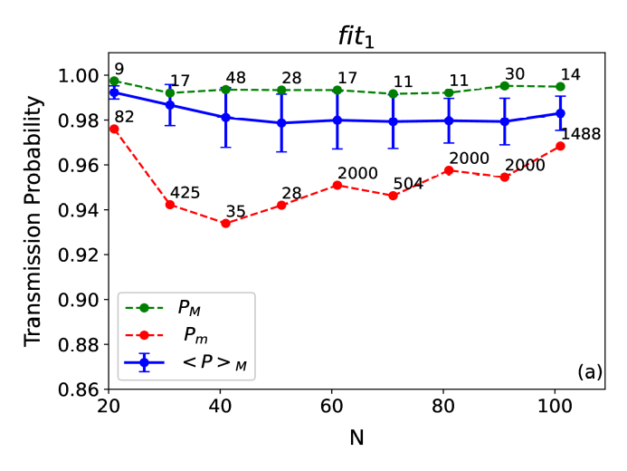
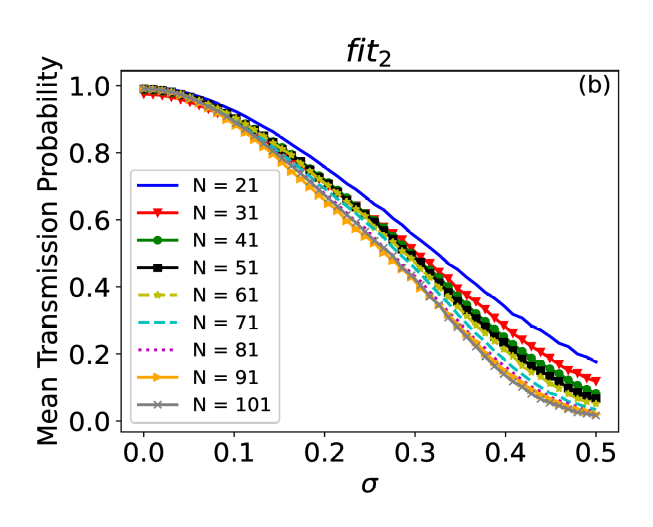

¿Cómo diseñar un canal de comunicación cuántica que transmita información con alta fidelidad? Este trabajo usa algoritmos genéticos para optimizar los coeficientes de acoplamiento de cadenas de espín Heisenberg, logrando probabilidades de transmisión superiores al 99%. Las cadenas diseñadas mantienen una eficiencia del 98% incluso ante un 5% de desorden estático, mostrando robustez relevante para implementaciones experimentales reales.
Las computadoras y redes cuánticas necesitan mover información delicada de un punto a otro sin destruirla: a diferencia de un bit clásico, un estado cuántico no se puede copiar ni amplificar en el camino. Una cadena de espín —una fila de partículas cuánticas acopladas entre sí, como espines nucleares o qubits superconductores— puede actuar como un cable pasivo para este tipo de transporte: alcanza con preparar el estado en un extremo y dejar que el sistema evolucione para que llegue al otro, sin controlar cada partícula individualmente en el camino. El desafío es encontrar qué intensidad de acoplamiento poner entre cada par de partículas para que esa transmisión sea lo más fiel posible.
Para resolver ese desafío hace falta una función costo que indique qué tan bueno es un diseño. Acá se usa la fidelidad promedio de transmisión: un número entre 0 y 1 que compara el estado que llega al final de la cadena con el que se preparó al principio (1 sería una transmisión perfecta), promediado sobre todos los estados iniciales posibles. Cuanto más alto ese número, mejor funciona el canal.
Este trabajo optimiza específicamente cadenas de espín tipo Heisenberg —donde la interacción entre vecinos sigue el modelo de Heisenberg, habitual en física de la materia condensada— usando algoritmos genéticos (GA), un método de optimización inspirado en la evolución biológica. Los GA son muy eficientes para explorar muchas configuraciones posibles y encontrar cadenas con buena capacidad de transmisión. Una desventaja aparente de un método basado en aleatoriedad es que la intensidad de los acoplamientos puede saltar bruscamente entre sitios vecinos, algo poco práctico de construir en un laboratorio. Ajustando la función costo, también es posible obtener cadenas cuyos acoplamientos varían suavemente de sitio a sitio, sin perder capacidad de transmisión.
Algoritmo Genético
El GA optimiza los coeficientes de acoplamiento de intercambio dependientes del sitio (ECCs) —en criollo, cuán fuerte está conectado cada espín con el siguiente— dentro del Hamiltoniano de Heisenberg, el operador que describe cómo evoluciona el sistema en el tiempo. Una simetría del problema (el Hamiltoniano conserva la magnetización total) permite restringir los cálculos al subespacio de una excitación, es decir, al caso en que solo un espín de la cadena está "encendido" a la vez. Esto reduce enormemente el costo computacional y permite evaluar la probabilidad de transmisión de forma rápida y precisa.
Trasladado a los términos clásicos de un algoritmo genético:
- Una cadena de espín centrosimétrica (simétrica respecto a su punto medio) equivale a un cromosoma
- Los ECCs juegan el papel de genes
- La función de fitness (la métrica que mide qué tan bueno es cada candidato) se basa en la probabilidad de transmisión del sitio 1 al sitio N

(a) Una cadena de espín centrosimétrica con 4 ECCs se trata como un cromosoma con 4 genes. (b) Los genes se inicializan aleatoriamente y se calcula el fitness para cada uno de ellos. (c) Los cromosomas más aptos se seleccionan como padres y se genera una nueva generación mediante cruzamiento. Algunos de ellos se seleccionan aleatoriamente para mutación.
Funciones de Fitness
Se probaron dos funciones de fitness distintas, ambas basadas en P₁,ₙ: la probabilidad de que el estado preparado en el sitio 1 llegue intacto al sitio N, el otro extremo de la cadena.
- Fit1: es simplemente P₁,ₙ, maximizada sin ninguna otra restricción. Esta optimización libre suele dar perfiles de ECCs ásperos, con saltos fuertes de intensidad entre sitios vecinos.
- Fit2: es proporcional a P₁,ₙ pero suma una penalización por variaciones bruscas, para favorecer ECCs que cambien suavemente de sitio a sitio. El resultado son perfiles de interacción suaves, más fáciles de construir en un laboratorio real.
El resultado: los Hamiltonianos suavizados transmiten igual de bien —o apenas peor— que los ásperos, y ambos tipos muestran una robustez similar frente al desorden. Suavizar el perfil de acoplamientos no cuesta calidad de transmisión.
Comparación de Cadenas Optimizadas
La siguiente comparación muestra, para una misma longitud de cadena, cómo se ven los acoplamientos optimizados con cada función de fitness:
Fit1: Desempeño Máximo

Distribuciones de ECC ásperas con excelente probabilidad de transferencia.
Fit2: Desempeño + Suavidad

Distribuciones de ECC suaves con probabilidad de transferencia similar.
Robustez ante Desorden Estático
Ningún dispositivo real tiene acoplamientos perfectamente calibrados: siempre hay pequeñas imperfecciones de fabricación. Para poner a prueba las cadenas diseñadas frente a esto, se aplica un modelo estándar de desorden estático, donde cada ECC se perturba como Ji → Ji(1+ξi), con ξi una variable aleatoria gaussiana de media nula y desviación estándar σ (que representa la magnitud típica del error). El resultado: las cadenas diseñadas son robustas en todas las longitudes simuladas y transmiten con 98% de eficiencia incluso con un 5% de desorden.
Los siguientes gráficos muestran cómo cae la probabilidad de transmisión media a medida que aumenta la fuerza del desorden, para cada tipo de cadena:
Robustez ante Desorden (Fit1)

Probabilidad de transmisión media vs fuerza de desorden para ECCs ásperos.
Robustez ante Desorden (Fit2)

Probabilidad de transmisión media vs fuerza de desorden para ECCs suaves.
Conclusiones
- Los algoritmos genéticos son una herramienta altamente eficiente para diseñar configuraciones de ECCs que logren transmisión de estados cuánticos de alta calidad en cadenas de espín Heisenberg.
- Se pueden encontrar diferentes soluciones imponiendo restricciones en las funciones de fitness. Sin embargo, las propiedades físicas parecen ser independientes de la distribución de ECCs, por lo que no hay ventaja teórica. Las cadenas suavizadas podrían ser más prácticas para implementación experimental.
- Las cadenas diseñadas son robustas para todas las longitudes simuladas. Transmitirán con 98% de eficiencia para una fuerza de desorden del 5%.